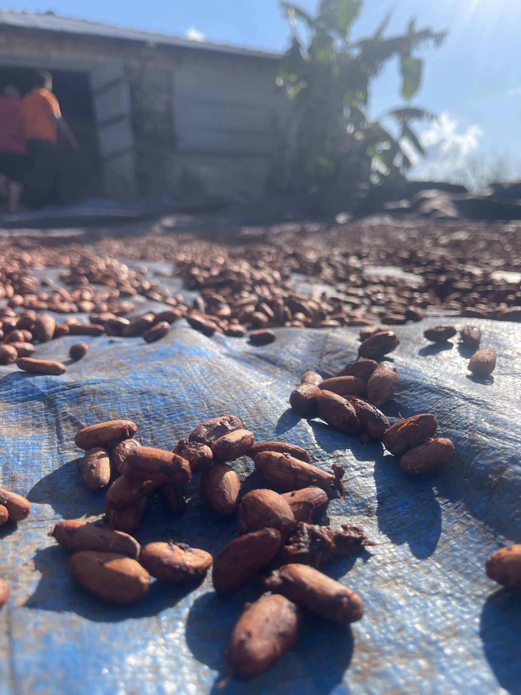
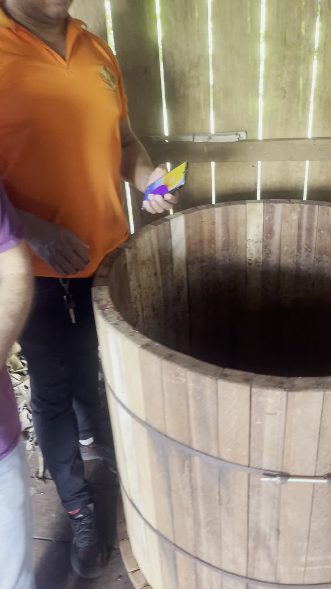
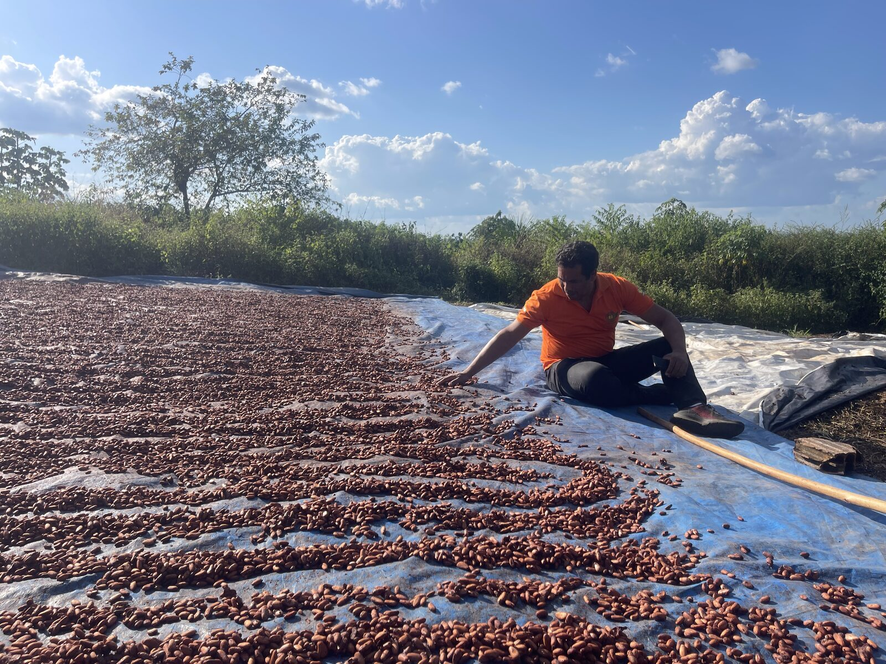

Pará, Amazon Rainforest, Brazil • CEPOTX Cooperative Member Farm
Fazenda Cleide is a family cacao farm in the municipality of Altamira, Pará — deep in the Brazilian Amazon — farmed by Cleide Maris Suk and Marcelo. The farm is part of the CEPOTX cooperative network (Cooperativa Central de Produção Orgânica da Transamazônica e Xingu), which supports organic smallholder cacao production along the Trans-Amazon highway.
Agroverse visited the farm on 2 July 2024 as part of a Foreign Supplier Verification (FSVP) site visit. The farm is organic certified (IBD/NOP via CEPOTX) and carries CEPOTX site code B-06-108. During the visit we documented the family's careful post-harvest practice: cacao harvested with the Garra tool, fermented with pH monitored to 4.8–5.8, sun-dried on a scheduled turnover routine, and hand-sorted through sieves — the slow, attentive work that makes ceremonial-grade cacao.
Their cacao reaches you as traceable, QR-coded ceremonial cacao — every bag tied back to the family and the plot on the map below.



The map shows the farm's working areas (fermentation and drying yards) as recorded from 76 geotagged photos and videos taken during the July 2024 site visit. The polygon is an approximate outline from that GPS data; a formal boundary walk or CAR registration will refine it.